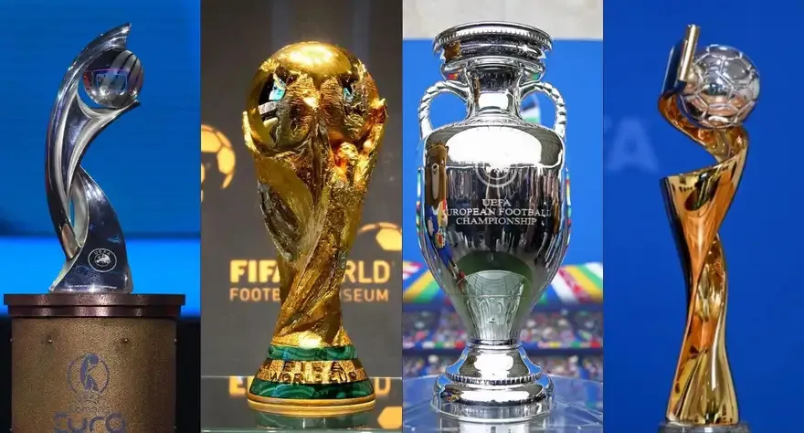
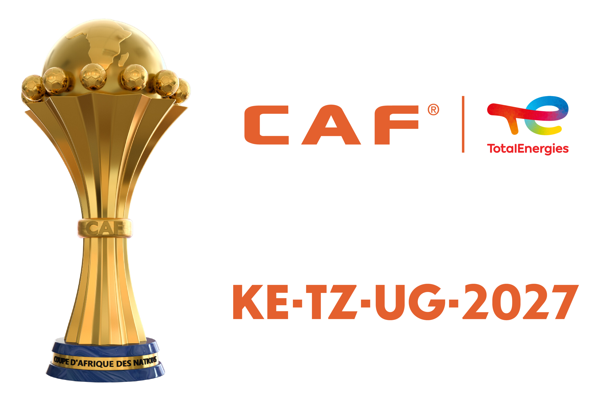
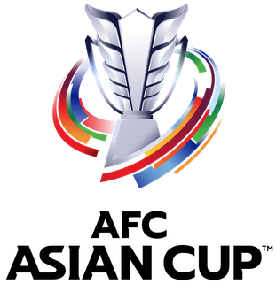

Predict the winner of these Football tournaments as I predicted and you will win OASIS from 3m Mahmoud.

commonly known as Champions League. Organized by Union of European Football Associations (UEFA). Contested by top-devision European clubs

known as TotalEnergies African Cup of Nations. Organized by Confederation of African Football (CAF). Contested by top African nations that won a lot in the qualifiers

The AFC Asian Cup is the primary association football competition contested by the senior men's national teams of the members of the Asian Football Confederation (AFC)